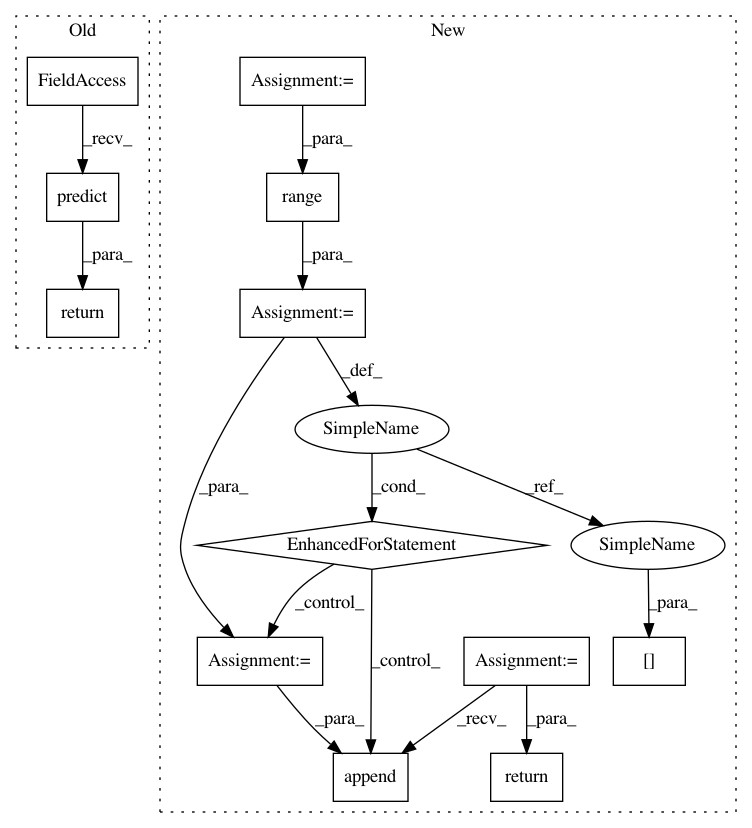

8a420e8ef11ebf828e5e5b33e8a830eb74c39d6a,baseline/services.py,ClassifierService,predict,#ClassifierService#Any#Any#Any#,215
Before Change
self.model.lengths_key: featurized_examples[self.model.lengths_key]
}
outcomes_list = self.model.predict(examples)
return self.format_output(outcomes_list)
def format_output(self, predicted):
results = []
for outcomes in predicted:
After Change
version = kwargs.get("version")
if backend not in {"tf"}:
raise ValueError("only Tensorflow is currently supported for remote Services")
import_user_module("baseline.{}.remote".format(backend))
exp_type = kwargs.get("remote_type")
if exp_type is None:
exp_type = "http" if remote.startswith("http") else "grpc"
exp_type = "{}-preproc".format(exp_type) if preproc == "server" else exp_type
exp_type = f"{exp_type}-{task_name}"
model = create_remote(
In pattern: SUPERPATTERN
Frequency: 3
Non-data size: 12
Instances
Project Name: dpressel/mead-baseline
Commit Name: 8a420e8ef11ebf828e5e5b33e8a830eb74c39d6a
Time: 2020-03-09
Author: blester125@gmail.com
File Name: baseline/services.py
Class Name: ClassifierService
Method Name: predict
Project Name: scikit-multiflow/scikit-multiflow
Commit Name: 6496c605ad12f3eaac3939804ee8bef0b82a2692
Time: 2019-02-27
Author: aquancva@gmail.com
File Name: src/skmultiflow/bayes/naive_bayes.py
Class Name: NaiveBayes
Method Name: predict
Project Name: dpressel/mead-baseline
Commit Name: 8a420e8ef11ebf828e5e5b33e8a830eb74c39d6a
Time: 2020-03-09
Author: blester125@gmail.com
File Name: baseline/services.py
Class Name: ClassifierService
Method Name: predict
Project Name: scikit-multiflow/scikit-multiflow
Commit Name: 5bf139b5a4312e6bfbe6a196e68fb261ef674368
Time: 2019-02-25
Author: jacob.montiel@gmail.com
File Name: src/skmultiflow/bayes/naive_bayes.py
Class Name: NaiveBayes
Method Name: predict